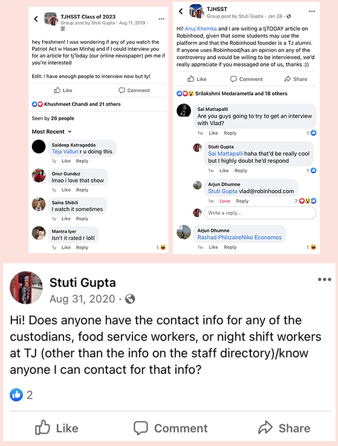

Social Media
I use social media to find new people with unique stories as well as to bring new viewers to our publication, increasing our overall viewership.
I use instagram to promote our print issues as well as our other tjTODAY publications. I created the left post to promote our November print issue, the middle post to promote our October print issue, and the right post to promote our podcast network. When creating these posts, I strive to make them as interactive and aesthetic as possible, using features such as polls, to encourage my followers to view our publications.

I use Facebook to find a variety of people across demographics including grade level, ethnicity, gender, etc. I created the top left post to find incoming freshman interviewees for an article I wrote over the summer covering Hasan Minhaj's show "The Patriot Act", the top right post to find interviewees of all grade levels for an article I wrote covering the controversy surrounding Robinhood founder and Jefferson alumni Vladmir Tenev, and the bottom post to find contact information for an article covering the effect of the COVID-19 pandemic and virtual learning on the jobs of custodians and bus drivers.
